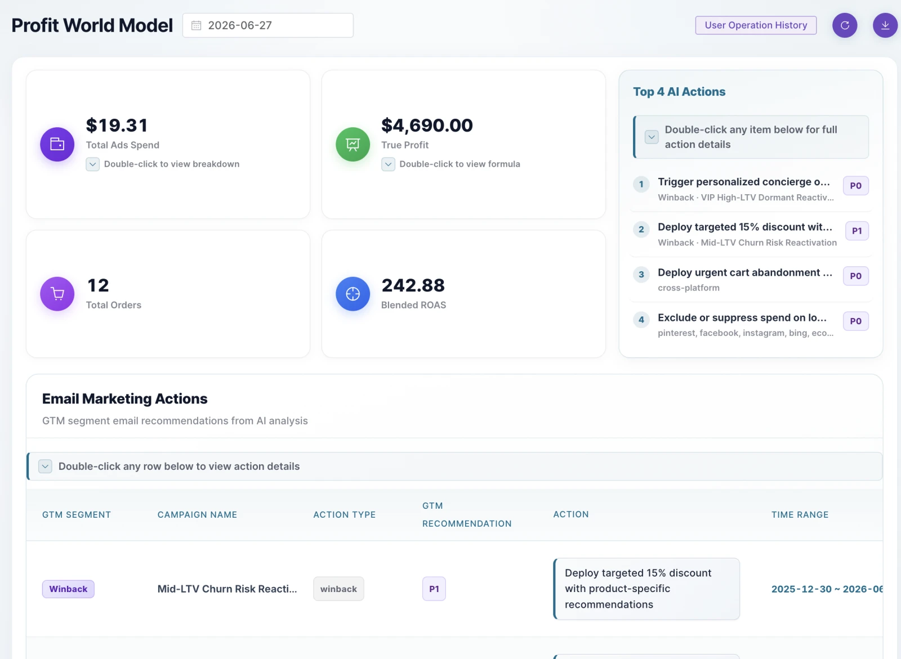
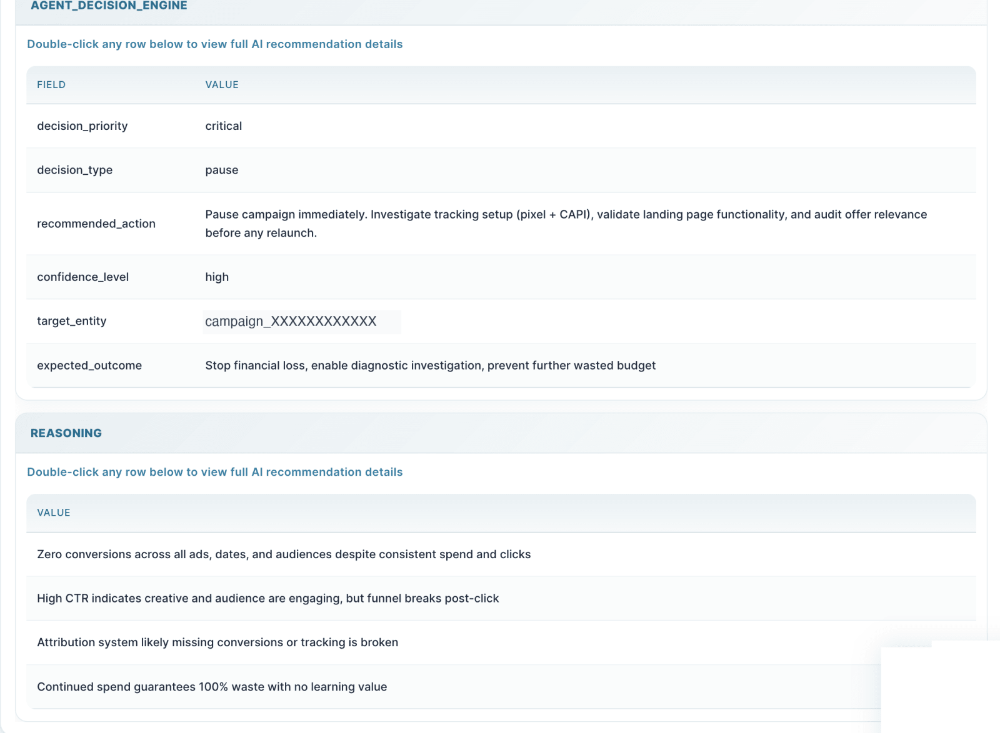
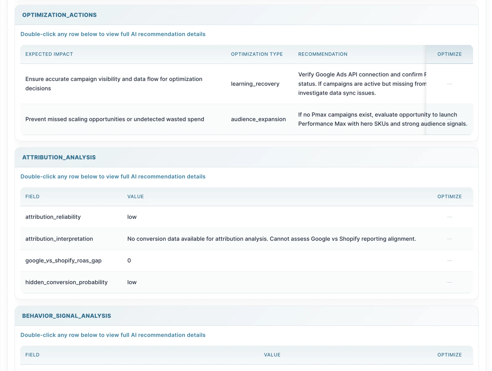
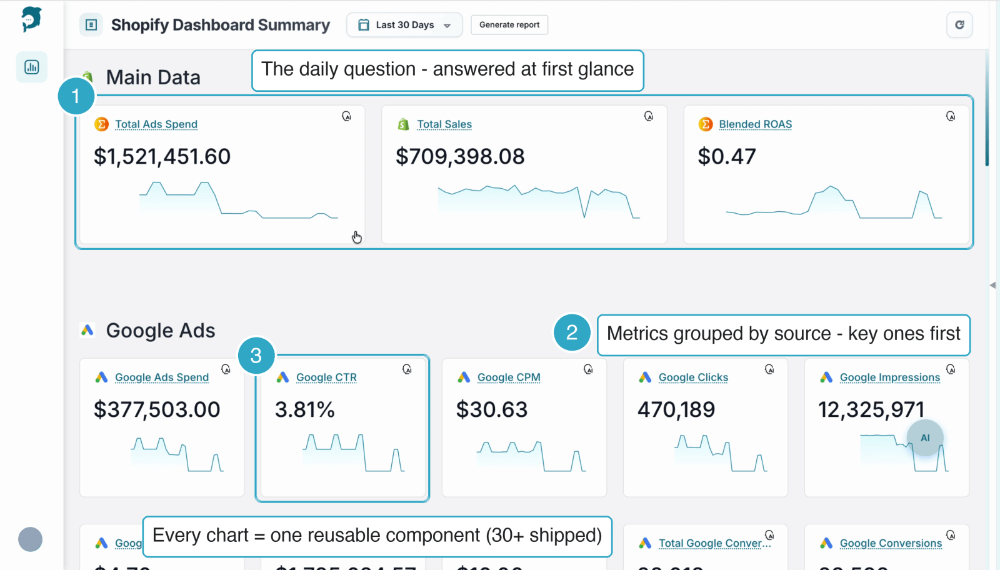
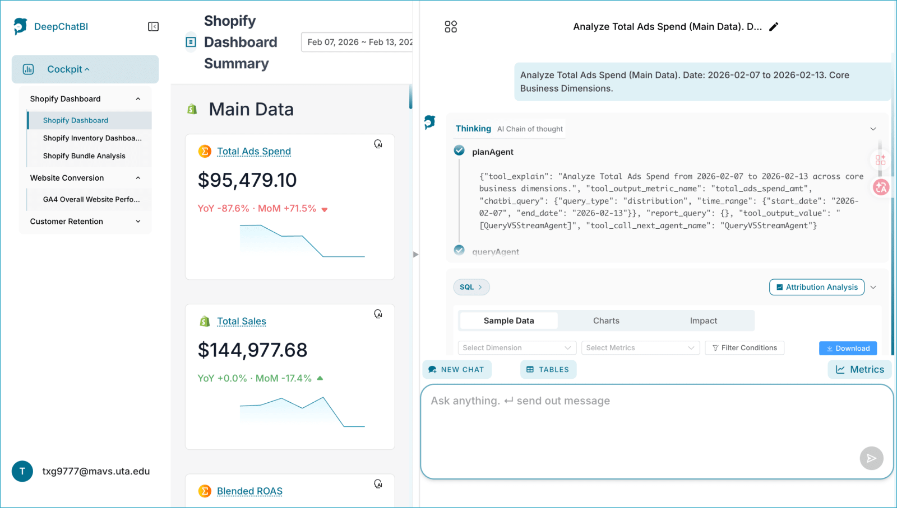
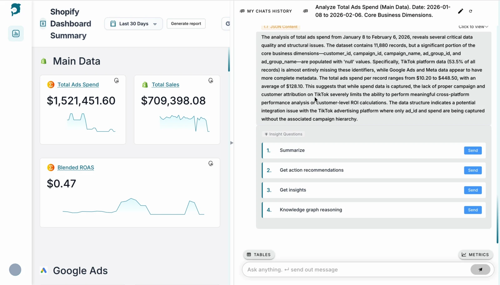
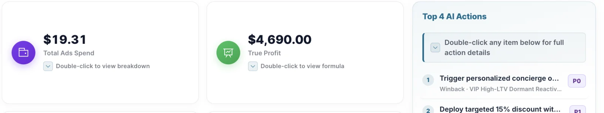

卡 ①
今日决策流：所有动作，只走这一条流
建议卡按利润影响排序，卡内直接 Approve，不再跳页；执行分轨——广告 → 平台 API，邮件 → 标注「将在 Klaviyo 执行」。现状 Klaviyo 只读，需申请写权限并保留人工审批。
治 #3 · #5 · #6 · #8

概述
DTC / Shopify 操盘手的「利润决策大脑」：多个数据源对齐成一个可审计的利润数字；Agent 找问题、给解释、备好动作——经你确认，才执行。我负责的是人怎么看懂、信任、并安全地用这套智能。
详情
30 秒速览 · 30-sec overview
把「利润真相」变成可决策的界面：动作备好，经你确认才执行。
核心用户是一人分饰三角的操盘手，所以「看见 → 想清楚 → 动手」必须收进同一条流。我定义了 HITL 四段链路，把 Chat 退为归因解释层、看板作为行动决策主界面，并在上线产品里盘出 8 个界面问题，把设计资源压在「信任 + 可执行」上。
01 背景
平台 ROAS（广告回报率）看着很健康；扣掉 COGS（商品成本）、平台费、运费、退款——那个「赢家」广告系列正在悄悄烧钱。真正的缺口是工具断层：财务工具止步报表，归因工具停在洞察，「看见」和「动手」分在两个 tab；洞察的终点是保存 / 导出 / 分享，不是执行。

02 真实决策（匿名）
一个美国高客单的产后营养品牌陷在「ROAS 陷阱」：品牌词用了广泛匹配（Broad Match），每天为无效流量付钱，报表 ROAS 却依然好看。Profit World Model 发出 Critical Alert（最高优先级警报）：先处理这个。
01 SPOT · Critical Alert
广泛匹配在漏钱，按利润影响排到第一。
02 WHY · Visible reasoning
decision · confidence · reasoning 摆在卡片里，不藏在双击后面。
03 ACT · Human sign-off
一张可执行卡，人工确认后才执行；执行后花费持平、单日利润翻倍量级（已模糊化）。


「你们不是在帮我看数据，而是在接管我的利润决策。」客户原话 · 匿名
03 阶段三 · Designing for AI Agents · 2026.03 – 07
我在上线产品里盘出 8 个界面问题。P0 只有一个：「看到即行动」的闭环是断的——Agent 交付已就绪的动作，却没有「先复核再执行」的闸门，也无法就地执行。其余七个：推理被埋、说模型话、空 / 坏数据裸奔、动作与证据混排、决策面不收口、下钻靠双击、缺单一下一步。
最稀缺的不是更多分析，是「信任 + 可执行」——设计资源全压 P0 / P1：先让高风险动作安全，再让推理可见、把分析翻成「利润」。

卡 ①
建议卡按利润影响排序，卡内直接 Approve，不再跳页；执行分轨——广告 → 平台 API，邮件 → 标注「将在 Klaviyo 执行」。现状 Klaviyo 只读，需申请写权限并保留人工审批。
卡 ②
推理站到台前，模型话译成「钱话」。
卡 ③
高风险动作全部过闸门；广告轨 24h 可撤回，邮件轨 = 发送前可取消。
卡 ④
空 / 坏数据有来源与状态说明，不裸奔。
卡 ①–③ 为设计探索、未上线；分账见 06。
04 阶段二 · Designing AI Products · 2025.12 – 2026.03
从竞品调研中的用户反馈发现：单从 Chat 或者 Dashboard 得到行动洞察与建议，两条路径效率都低。重新定义角色分工：看板是行动决策的主角，Chat 是归因解释的配角；构建多轮对话式问数路径，答案下钻回看板，问数即决策。
这个架构判断由两层证据顶住：内测用户先开口（"It's slow." "I never asked for all this."），以及 7 款竞品同指一个结论——Chat-first 的产品把洞察当终点，领头羊的补救是在 Chat 旁另建人工审批的动作队列。由此立下 Chat 的范围纪律：Explain →（被问才）Diagnose →（被请求才）Act。


方案 A · Chat 主角：指令和问数全在 chatroom 完成，单次决策最省事，代价是黑盒。方案 B · 看板结论报告：行动导向信息更少，偏趋势判断。方案 C · 行动型 Cockpit：看板呈现结论，Cockpit 退为证据层。三个方案都做成可交互 HTML 原型（v6 设计系统）跑过真实对比。
活体规范文档：双 teal 语义 token · 组件全态矩阵（hover 真响应）· 动效规格 · Do / Don't · 溯源到 Figma 节点号 · tokens 一键复制。
05 阶段一 · SaaS 秩序构建 · 2025.10 – 12
技术团队构建的产品难以读懂并使用，需要在信息架构与逻辑层面做秩序构建。我重排信息层级，把复杂业务数据转译成可视化，优先呈现用户日常最关心的信息——非技术用户能快速读懂并行动。Before（2025.10 工程师版）：裸表名 Chat 主页 → 看板列表 → SQL 手写产数 → cockpit 总览；After（2026.02 上线版）：按角色与任务组织的看板。

06 成果分账
07 复盘
产品不缺智能，缺人敢用的界面——看得懂（可见推理）、信得过（证据 + 利润）、敢执行。杠杆不在更多图表，在这三件事。洞察 → 方向 → 目标 → 策略 → 方案——我做判断的顺序，也是这一页的骨架。